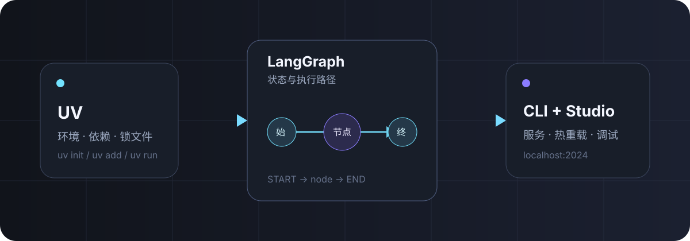

AGENT 开发 · 入门
UV + LangGraph CLI 入门¶
用 UV 获得快速、可复现的 Python 环境，再用 LangGraph CLI 把一张状态图变成支持热重载的本地 API 服务。
我们要完成什么¶
这篇文章会从空目录开始，完成一个不依赖模型 API Key 的最小 LangGraph 应用。最终只需运行一条命令，就能得到带热重载的本地 Agent Server：
这个组合的分工很清楚：
- UV 管 Python 版本、虚拟环境、依赖和锁文件；
- LangGraph 用节点、边和共享状态描述应用逻辑；
- LangGraph CLI 读取配置，把图暴露为本地 API，并连接可视化调试界面。

1. 安装 UV¶
macOS 与 Linux 可以使用官方安装脚本：
Windows PowerShell：
确认安装成功：
UV 不要求系统预先安装 Python；缺少指定版本时，它可以按需管理 Python。更多安装方式见 UV 官方安装文档。
2. 初始化项目¶
创建一个 Python 3.12 应用：
再添加 LangGraph 与 CLI。inmem extra 提供本地开发服务器所需的内存运行时：
为什么不手动激活虚拟环境？
uv run 会在执行命令前检查锁文件和环境，并自动同步依赖。你仍然可以激活 .venv，但入门阶段直接使用 uv run 更简单，也更不容易在错误的 Python 环境里执行命令。
此时的关键文件大致如下：
hello-agent/
├── .python-version
├── pyproject.toml
├── uv.lock
└── src/
└── hello_agent/
├── __init__.py
└── graph.py # 下一步创建
3. 写一张最小状态图¶
新建 src/hello_agent/graph.py：
这里有三个核心概念：
State是节点间共享的数据结构；greet是一个节点，接收当前状态并返回需要更新的字段；START → greet → END定义执行路径，compile()得到可运行的图。
图对象命名为 graph 不是强制要求，但下一步配置会用 模块路径:变量名 精确找到它。
4. 配置 LangGraph CLI¶
在项目根目录新建 langgraph.json：
{
"dependencies": ["."],
"graphs": {
"hello_agent": "./src/hello_agent/graph.py:graph"
},
"env": ".env"
}
| 字段 | 作用 |
|---|---|
dependencies |
告诉服务安装当前项目，使 src 中的包可导入 |
graphs |
注册图的名称，以及图对象所在的文件和变量 |
env |
指定环境变量文件；当前示例无需密钥，但保留后便于扩展 |
创建一个空的 .env 文件，或者先把 env 字段删掉。务必将真实密钥加入 .gitignore，不要提交到仓库。
5. 启动本地服务¶
默认情况下，本地 API 会监听 http://127.0.0.1:2024。开发模式会监视源文件，修改图代码后自动重载；CLI 通常还会打开 LangGraph Studio，便于创建线程、提交输入并查看每个节点的状态变化。
如果不希望自动打开浏览器：
如果 2024 端口被占用：
开发模式与生产部署
langgraph dev 使用内存运行时，适合本地开发和测试。它不是持久化的生产环境；容器构建与部署应继续了解 langgraph build、langgraph up 或托管平台。
6. 继续扩展¶
最小图跑通后，可以按这个顺序增加能力：
- 在
State中加入消息列表； - 添加模型节点与工具节点；
- 使用条件边决定下一步执行哪个节点；
- 加入 checkpointer 保存线程状态；
- 接入 LangSmith tracing，观察耗时、输入输出与错误。
不要一开始就把模型、工具、记忆与部署全部塞进同一张图。先让一条状态转换链路跑通，再逐层增加复杂度，调试成本会低很多。
常见问题¶
langgraph: command not found¶
优先使用项目环境运行：
并检查 CLI 是否已加入项目：
修改代码后没有生效¶
确认使用的是 langgraph dev，且没有传入 --no-reload。如果修改了依赖或 pyproject.toml，停止服务后运行 uv sync，再重新启动。
图加载失败¶
依次检查：
langgraph.json中的文件路径是否相对项目根目录；- 冒号后的变量名是否与代码中的
graph一致； - 包目录是否包含
__init__.py； uv run python -c "from hello_agent.graph import graph; print(graph)"能否成功。
小结¶
UV 解决了“项目究竟运行在哪个 Python 和哪组依赖上”，LangGraph CLI 解决了“如何把图快速跑成可调试的服务”。两者组合后，环境、依赖与启动方式都落在仓库文件里，换一台机器也能稳定复现。
下一篇可以在这张最小图上加入真实模型与工具调用，把它扩展成一个可观察的 ReAct Agent。